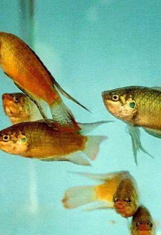
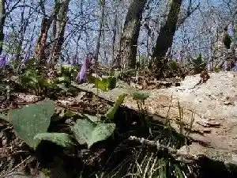
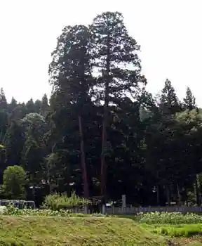
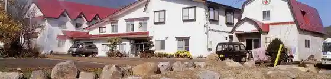
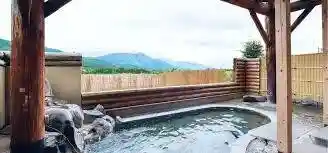

Japan / Nagano / Iizuna
Iizuna, Nagano
Iizuna · Nagano
Iizuna
Highlighted on the Nagano map.

Sights
Togyo
Iizuna, Nagano · 026-253-6646 · Official / source link
Ue Akashio Chiku no Katakuri no Hana
Iizuna, Nagano · 026-253-7788 · Official / source link

Takaoka Shrine no Osugi
Iizuna, Nagano · 026-253-6646 · Official / source link

Taki no Sawa Onsen
Iizuna, Nagano · 026-253-2317 · Official / source link

Mure Onsen Tengu no Kan
Iizuna, Nagano · 026-253-3740 · Official / source link

Koke Okina Tera
Iizuna, Nagano · 026-253-3566 · Official / source link
Bushu Kashu Dochu Sakai no Hi
Iizuna, Nagano · 026-253-6646 · Official / source link
Koshin Tsuka Burial Mound
Iizuna, Nagano · 026-253-6646 · Official / source link
Sambonmatsu
Iizuna, Nagano · 026-253-6646 · Official / source link
Hana Kenjo Yama
Iizuna, Nagano · 026-253-4765 · Official / source link